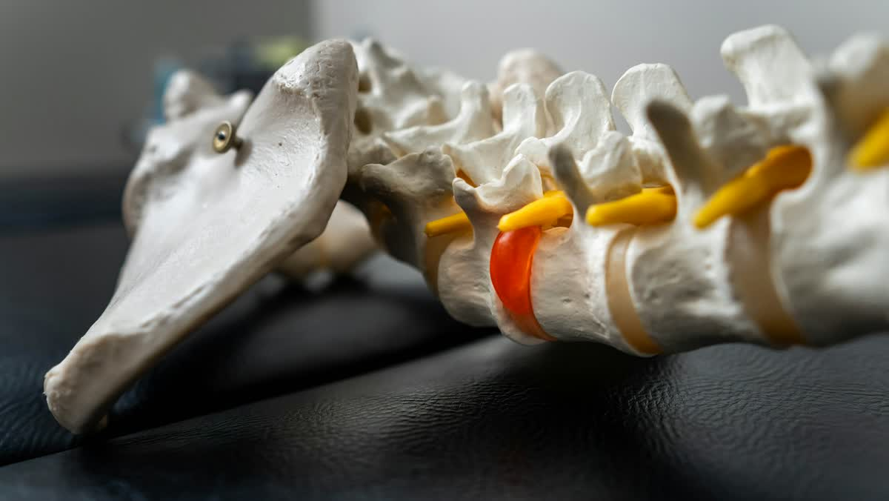

You've probably seen the ads. A padded table, a harness, a glowing animation of a disc being pulled neatly back into place. Spinal decompression gets promised a lot in marketing, and anyone with low-back pain is owed some plain talk about what it is, who it's usually considered for, and who should pass.
Traction, decompression, and where the words overlap
Lumbar traction is a controlled pull on the low back. Spinal decompression usually describes a style of traction in which a device applies the pull in a programmed way, sometimes cycling between more and less tension instead of holding one steady stretch. The terms overlap, the devices differ, and the names get used loosely across the whole industry. So the useful question to ask any provider is never "do you have decompression?" It's "what are you proposing for my back, and why?"
Our spinal decompression page and our cervical and lumbar traction page lay out the general picture.
The thinking behind it
The discs in your low back sit between the vertebrae like small cushions. When one bulges or herniates, it can press on a nearby nerve root, and that may show up as back pain, pain into the buttock or leg, or both. The idea behind decompression is that gentle, repeated stretching may reduce pressure in and around the disc and give irritated tissue some breathing room.
"May" is doing real work in that sentence. People respond differently, and decompression is one piece of a plan, not a guaranteed fix. If leg symptoms are part of your story, sciatica and low-back pain: what's actually going on explains the usual suspects.
Who tends to ask about it
Picture someone who drives for work around Portland all week. By Friday the low back is stiff, and the ache comes back faster each time. It's the kind of person we hear from, along with people whose back pain:
- gets worse after sitting or bending forward
- travels from the back into the buttock or a leg
- has gone through repeated flare-ups over weeks instead of settling
None of that tells you what's causing it. Only an exam does, and sometimes imaging, which is why decompression is a conversation to have after the exam, not before.
Who should skip it
It isn't for everyone. A recent fracture, infection, tumor, spinal hardware or recent spinal surgery, advanced osteoporosis, pregnancy, and some vascular conditions, among others, are reasons to hold off or choose a different route. Your exam and history are how that gets sorted out.
Then there's the short list that belongs in an emergency room, not a booking page. Numbness in the groin or saddle area, new trouble controlling your bladder or bowels, or leg weakness that's getting worse. Back pain with a fever, or after significant trauma, also needs medical attention promptly.
What a course of care looks like
We can't give you a number of sessions here, and be wary of anyone who offers one before examining you. In general, a plan that includes decompression gets re-checked as it goes. Is the leg pain backing off? Can you sit a bit longer? Sleeping any better? If nothing is shifting, the plan should shift too, whether that means a different treatment, imaging, or a referral.
What it can't do alone
Say the pull helps and the disc calms down. The back still has weak hip and core muscles, stiff joints, and daily habits that were there before the flare-up, and none of those go away because a disc got some relief. Rehab and corrective exercise is how the gain gets kept, and spinal adjustments may help joints that aren't moving well. Why rehab exercises make relief last picks up that thread.
Questions worth asking anyone who recommends it
- What did my exam show that makes this a fit for me?
- How will we know it's helping, and when do we reassess?
- What would make you stop or change course?
A good provider will have answers. If you aren't sure what an exam involves, what happens at your first chiropractic exam is a decent primer.
If your back has been telling you something for a while, reach out to our Milwaukie office and we'll start with the exam. Patients also come to us from Gladstone and Oregon City, and our new patient page shows what to expect before you arrive.
General education only, not a diagnosis or treatment plan for any one person.
Low-back pain that keeps flaring?
Start with an exam. We'll explain what we find and what your options may be.